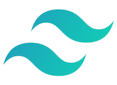
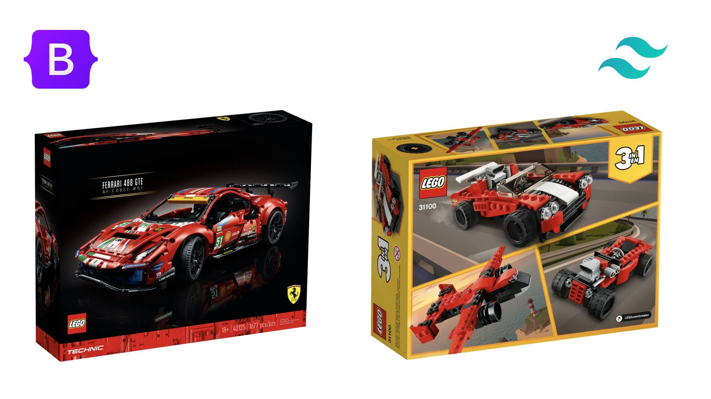
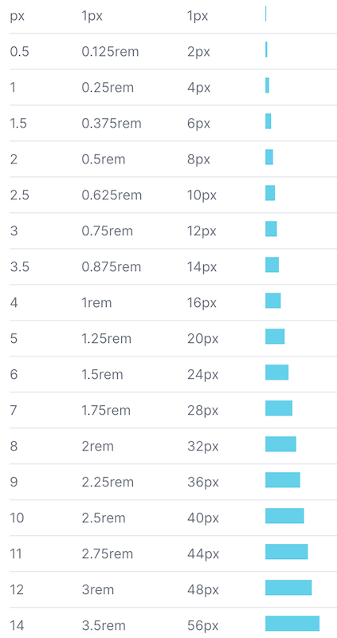
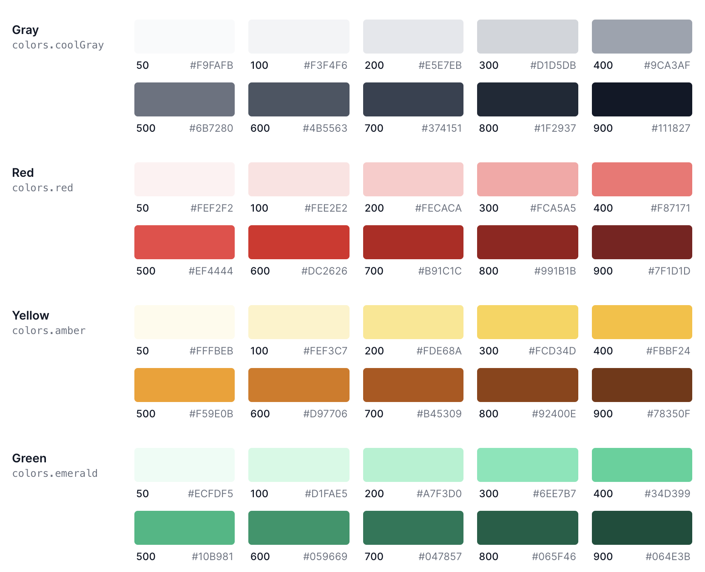

Tailwind CSS
v čem je kouzlo utility-first CSS frameworku
Petr Koláček
Bootsrap vs Tailwind
- design system
- modulární třídy (btn, alert)
- dokonalejší větší komponenty - často s nimi nevystačíme - musíme si vyrobit vlastní
Bootsrap vs Tailwind

- design system
- atomické třídy (w-16, text-center)
- miniaturní lego kostičky - lze z nich složit (téměř) všechno
Bootsrap vs Tailwind
Micro Tachyons vs Tailwind
- minimální počet tříd
- snadná rozšiřitelnost díky Emmet
- spoléhá na konvence
Micro Tachyons vs Tailwind
- obrovské množství tříd (až 20 MB)
- treeshaking
- spoléhá na build process
Responzivita
všechny třídy jsou responzivní
Stavy
třídy pro všechny stavy
Podpora dark mode
Kombinace přepínačů
Spacing

Barvy

Customizace, Theaming
@apply
@theme
Just-in-Time Mode
compiler for Tailwind CSS that generates your styles on-demand as you author your templates instead of generating everything in advance
Výhody?
- rychlost vývoje: nemusím opustit html markup
- bezpečí design systému
- možnost definovat vlastní parametry DS
- responzivita, stavy, dark mode out of the box
- variabilita - @apply, @theme